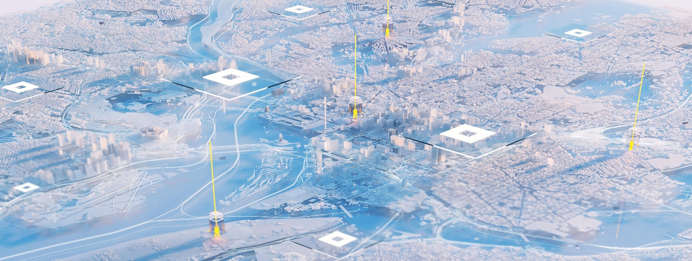

Integrating research, education, and industry collaboration to bridge the gap between knowledge and execution.
"To accelerate the transition toward sustainable, innovation-driven business systems by integrating research, education, and industry collaboration."
While sustainability has become a global priority, many organizations struggle to translate ambition into implementation. CSBI addresses this gap by acting as a bridge between knowledge and execution, enabling businesses and institutions to adopt sustainable practices that are both impactful and commercially viable.
The Kingdom's transformation initiatives — including the Saudi Green Initiative — highlight the importance of integrating sustainability into economic growth. CSBI supports this by embedding sustainability into core business strategy rather than treating it as a peripheral concern.

Transforming academic research into practical tools, frameworks, and solutions that organizations can readily apply — ensuring complex insights become clear, usable strategies with measurable outcomes.
Supporting the development of sustainable technologies and business models that address environmental and social challenges — refining these innovations for growth across broader markets and communities.
Working closely with corporations, SMEs, and startups to co-create solutions grounded in real-world needs — producing tailored approaches that drive meaningful impact and sustainable growth.
Providing evidence-based insights that help inform effective policymaking and regulatory frameworks — enabling decision-makers to address complex challenges with confidence and data-driven recommendations.
Equipping professionals and leaders with the knowledge and skills required to navigate and drive sustainability transitions effectively — preparing them to lead change with long-term resilience.
Establishing innovation labs and pilot projects where ideas are tested, refined, and scaled into viable solutions.
Creating industry-focused research programs that address real-world sustainability challenges with rigorous methodology.
Offering executive education and training that equips leaders with the tools to drive sustainability transformation.
Facilitating partnerships that bring together diverse stakeholders for collaborative impact across sectors.
Providing decision-makers with evidence-based insights that shape effective, forward-looking policy frameworks.
Measuring and comparing performance against international standards to drive continuous improvement and impact.